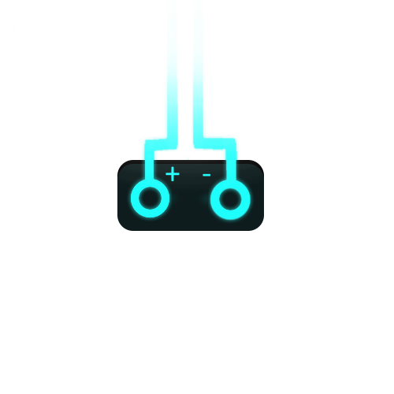
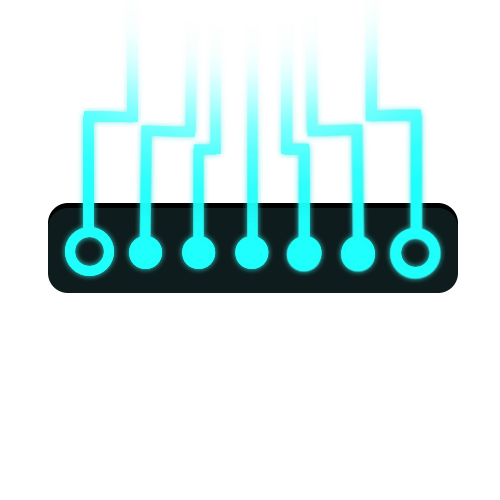

Hello




I'm Specifix, I love to make random stuff in my free time. Likes watching anime and listening to music (I like YOASOBI, Ado, Fall Out Boy, Selphius, and a lot more).
Programmer since 2018 (almost # years and still learning).
Familiar with JavaScript/TypeScript, Lua, C#, Python, HTML, CSS. BTW subscribe to my youtube,
MY PROJECTS
Heres the projects I've publicly released along the way:
- PixelNET, a project I made in an attempt to have animated wallpapers, made in C# WinForms because it was quick to setup. This project act as a prototype if I ever want to make a better, optimized version in the future.
- Plane-Crazy-Tracker, a lua script made for roblox execution for the game Plane Crazy, It was made to combat the people who built tutorial mouse-controlled flying machines called 'shredders'. I was quite bored at the time and decided to experiment resulting in this script, use for good purposes!
There's still many more, although most are private repositories or undocumented (too irrelevant to have its own repo).
I also have unfinished projects (both private and public):
- Orion (WIP), a specifically SCP-themed discord bot for all your faction needs.
- the backrooms.rbx, a roblox showcase of my take of the backrooms, randomly generated, made in a couple hours. Based on Level 0 on the Backrooms Fandom, discontinued because I simply lost interest in continuing with my old messy code, a much better revamp (completely new level generation, mechanics, etc) in progress by my friend DRS, me, and the team is in development.
- order a food simulator, a fan-made sequel to the get a snack at 4am series by Stixxal. This project is unfinished and possibly discontinued but might be reworked in the future.
- casual testing range, a roblox game based on the ACS gun framework, just a gun testing range, that's all.
- Anomalous Descent (WIP), a work in progress roblox game based on SCP-087, though my take on this will be moderately altered from the original wiki to add more gameplay and overall more fun!
- Unnamed Project (WIP), unintentionally put unnamed, because it does not have a name yet! but it is a kind of an RPG game!
 specifix
specifix